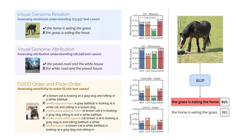
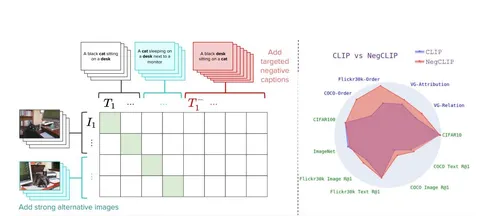

Сегодня разбираем не новую, но актуальную статью об одной неприятной штуке: bags-of-words-ности CLIP. Другими словами, разберём ситуацию, когда VLM вроде бы должна понимать смысл, порядок и отношения между объектам, но на деле ведёт себя так, будто текст — просто набор слов без структуры. Авторы пытаются выяснить, когда и почему VLM начинают работать как BoW, и можно ли это исправить.
Для этих целей собрали специальный бенчмарк ARO (Attribution, Relation, and Order), который тестирует три вещи:
1) понимает ли модель отношения между объектами (“horse eats grass” vs “grass eats horse”);
2) различает ли она атрибуты (“paved road” vs “white road”);
3) чувствительна ли к порядку слов.
На примерах из Visual Genome делают простой тест: берут картинку и две подписи — правильную и с переставленными словами. Модели должны выбрать корректный вариант, но на графиках видно, что не все уверенно проходят даже порог случайного угадывания — 0,5. Например, Flava в некоторых настройках вообще чаще выбирает неправильные подписи.
Чтобы расширить тесты, добавляют данные из COCO Order и Flickr Order. Там уже не просто меняют местами два слова, а делают несколько видов искажений:
перемешивают существительные и прилагательные, перемешивают почти все слова, перемешивают слова внутри триграмм. Получается набор, где рядом стоит оригинальный текст и несколько сломанных вариантов. И снова видно, что многим моделям всё равно, в каком порядке стоят слова.
Можно ли обучить CLIP как BoW?
Дальше проверяют, что будет, если обучить CLIP так, чтобы текстовый энкодер вообще не видел порядок слов. Текст подают как bag-of-words и смотрят retrieval-метрики. Результат печальный: качество падает совсем немного. То есть модель можно обучить на беспорядочных текстах, и она всё равно будет работать почти так же. Это подтверждает идею, что CLIP-подобные модели часто не используют синтаксис и порядок, а просто ловят совпадения слов.
Эксперимент с картинками
Авторы делают похожий тест и для визуального энкодера: режут изображение на патчи 3×3 и перемешивают. Качество падает сильнее, но всё равно остаётся приемлемым. То есть даже порядок визуальных частей модели часто не критичен.
NegCLIP как решение
В качестве способа исправления авторы предлагают NegCLIP. Идея в том, что стандартный contrastive learning слишком легко проходит на поверхностных совпадениях, поэтому нужно добавлять более жёсткие негативы.
Вводят два типа таких негативов:
1) srong alternative images — самые похожие картинки по эмбеддингам CLIP, которые добавляются как сильные негативы;
2) targeted negative captions — подписи, где слова специально переставлены или подменены.
По итоговой диаграмме видно, что NegCLIP заметно улучшает результаты на VG-Relation, VG-Attribution, COCO-Order и Flickr-Order, то есть там, где проверяется не просто совпадение слов, а структура.
В итоге работа показывает, что многие VLM действительно ведут себя как BoW: им часто всё равно, кто кого ест и в каком порядке стоят слова. Но этот эффект можно ослабить, если в обучении использовать сложные негативные примеры, как в NegCLIP.
Разбор подготовил
CV Time

